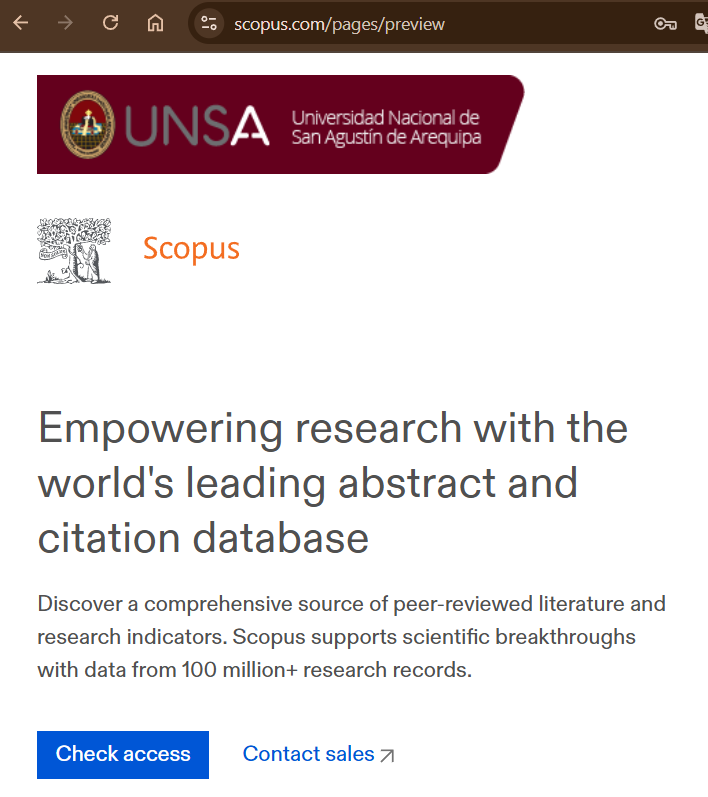

Sobre Mí
Nombre del Estudiante
Nombre: Rocío Sandoval Chacón
Especialidad: Educación en Idiomas
CUI: 20232468
Objetivos Académicos
Desarrollar competencias en investigación educativa, comprendiendo las metodologías y enfoques epistemológicos que sustentan la producción de conocimiento científico en el ámbito educativo.

Información del Curso
Investigación Educativa
Semestre: VI
Horario: MAR 12:20-2PM, JUEV 10:40-12:20
Información del Docente
Nombre: María del Carmen Córdova Martínez
Título: Investigadora Renacyt
Especialidad: Ciencias Sociales
Objetivos del Curso
Analizar los fundamentos epistemológicos de la investigación educativa, dominar metodologías de investigación cuantitativa y cualitativa, y desarrollar competencias para la búsqueda y análisis de literatura científica.
Actividades
Scopus
Base de datos bibliográfica que contiene resúmenes y citas de artículos de revistas científicas. Herramienta fundamental para la búsqueda de literatura académica de alta calidad.
Se relizó el registro en esta bases de datos usando el correo institucional
Web of Science
Plataforma de información científica que proporciona acceso a múltiples bases de datos de literatura académica y recursos de investigación.
Research Rabbit
Herramienta innovadora para el descubrimiento de literatura científica que utiliza redes de citas para encontrar artículos relacionados y visualizar conexiones entre investigaciones.
Normas APA
Elementos clave aprendidos:
- Estructura de referencias bibliográficas
- Citas en el texto (autor-fecha)
- Formato de títulos y encabezados
- Organización de manuscritos académicos
- Ética en citación y plagio
APA Style
Se utilizó el sitio web"APA Style" para comprender mejor las normas APA usando
Beneficios:
- Hay ejemplos de guía
- Disponible en español
- informaicón entendible
- Imágenes de guía
Ficha de análisis del artículo
Positivismo
Enfoque basado en evidencia empírica y verificable. La existencia extraterrestre requiere datos observables y medibles para ser considerada científicamente válida.
Constructivismo
El conocimiento sobre vida extraterrestre se construye socialmente a través de interpretaciones culturales y marcos conceptuales humanos.
Racionalismo
Utiliza la razón y lógica para deducir la posibilidad de vida extraterrestre basándose en principios matemáticos y físicos universales.
Empirismo
Todo conocimiento sobre extraterrestres debe provenir de la experiencia sensorial y observación directa del fenómeno.
Conocimiento Epistemológico
Conceptos fundamentales:
- ¿Qué es el conocimiento científico?
- Paradigmas de investigación
- Criterios de validez y confiabilidad
- Relación teoría-práctica
- Construcción social del conocimiento
Diapositivas de la exposición
Ficha de anális del artículo:
Ficha de análiss del artículo
Se realizó una ficha de análisis en base al artículo:
Articulo analizadoGamification in ELT: Investigating Its Impact on Motivation and Language Learning Outcomes
Bitácora de Investigación: Gamificación
| Título | Autor(es) | Año | Resumen | Problema | Enfoque | Diseño | Instrumento | Resultados |
|---|---|---|---|---|---|---|---|---|
| Gamificación en el aprendizaje de matemáticas | García, M. & López, J. | 2023 | Estudio sobre el impacto de elementos gamificados en la motivación estudiantil... | Baja motivación en matemáticas | Cuantitativo | Cuasi-experimental | Encuesta de motivación | Mejora significativa (p<0.05) |
| Elementos de juego en educación superior | Smith, A. et al. | 2022 | Análisis de implementación de badges y leaderboards en cursos universitarios... | Participación estudiantil limitada | Mixto | Estudio de caso | Entrevistas y analíticas | Aumento del 40% en participación |
| Gamificación y rendimiento académico | Rodriguez, P. | 2024 | Meta-análisis sobre la efectividad de la gamificación en diferentes niveles educativos... | Inconsistencia en resultados | Cuantitativo | Meta-análisis | Revisión sistemática | Efecto moderado (d=0.42) |
Reflexiones sobre la Gamificación
Hallazgos principales:
- La gamificación muestra efectos positivos moderados en la motivación estudiantil
- Los elementos más efectivos incluyen badges, puntos y retroalimentación inmediata
- El contexto y la implementación son factores críticos para el éxito
- Se requiere más investigación longitudinal para evaluar efectos a largo plazo